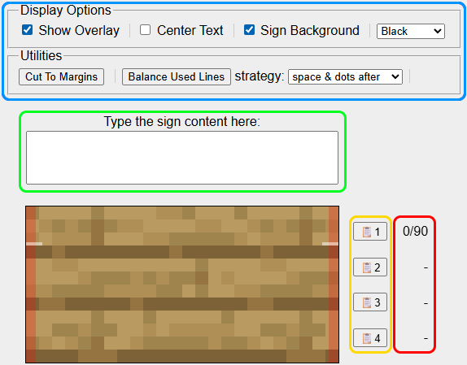
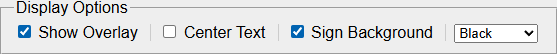
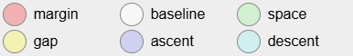

Welcome to MAST!
Minecraft Sign Editor
This tool is meant to help you make ASCII art for Minecraft signs, unlike other tools it is designed to perfectly match in-game signs with pixel-perfect accuracy.
Why is this tool useful?ASCII art is typically made with monospace fonts (= all characters take up the same width), which makes it both considerably easier to create and to be reused in any other monospace font without looking completely messed up. Unlucky for us, Mojangles (= the minecraft font), is not monospace, which means we have to keep in mind the width of each character when making ASCII art, this is the primary use for this tool.
Quick Overview
- To get started, simply start typing into the multi-line text input, which is located above the sign display (or canvas).
- The buttons next to the canvas let you copy the text line-by-line so you can easily paste it to an in-game sign.
- Next to it you find the line width counter, which displays the number of pixels the line currently takes up. It also warns you when a line is over the 90 pixel limit. A dash (-) indicates an unused line, which is not the same as an empty one.
- There are numerous additional controls in the dashboards at the top, you can learn more about them below.
Display Options
To preview how exactly your design will look in-game disable "Show Overlay", enable "Center Text" and "Sign Background", finally choose the appropriate dye color (if applicable).
Show Overlay
On by default, the overlay helps you easily determine how much space each character uses, which is very helpful for ASCII art. When enabled, a color legend will be shown below the sign display:
Center Text
Disabled by default for easier editing, enable it to match the in-game behavior. Note how a fully filled line (90/90 pixels) looks the same as if it wasn't centered, this technique lets you more easily control the position of each character in that line.
Sign Background
On by default, toggles the rendering of the oak sign texture. When disabled, the background is transparent, most browsers let you right-click the sign display (canvas) and copy or save the image as a transparent PNG.
Utilities
Cut To Margins
Press this to quickly cut the text to the margins of a sign, i.e. 90 pixels wide and 4 lines long at the most.
Balance Used Lines
Press this to try and balance the text (= make all lines the same width as the longest) using the selected strategy.
space only
This strategy is limited to the space character, which means it can only increase lines by an increment of 4 pixels, as such it cannot always achieve fully balanced lines, it gets you close and then you can fix it the way you want from there.
space & dots (before / after)
This more advanced strategy can almost always achieve perfect balance, with the main downside being possibly adding visible characters. It uses the dot (.) and backtick (`) characters in addition to space, which enable 2 and 3 pixel wide increments as well. The two variants change whether the visible characters (dots) are put before or after the space.
In some circumstances it might increase the width of the longest line as well and balance to the new length, such as when there is a single pixel difference between the longest and second longest line. This is because there is no way to add a single pixel width to a line, as even the 1 wide characters add one more pixel for the gap after them.